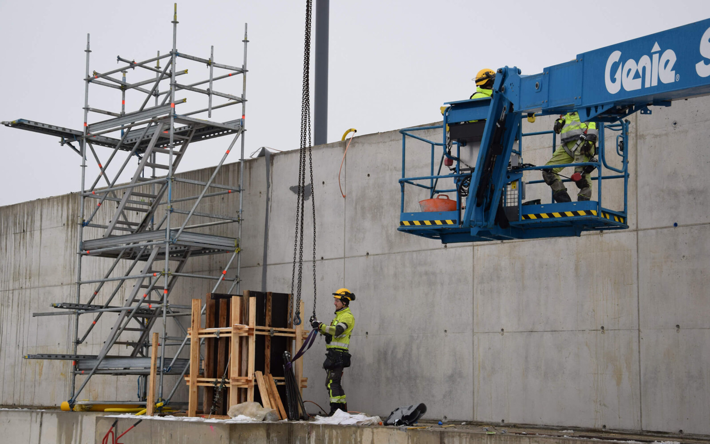
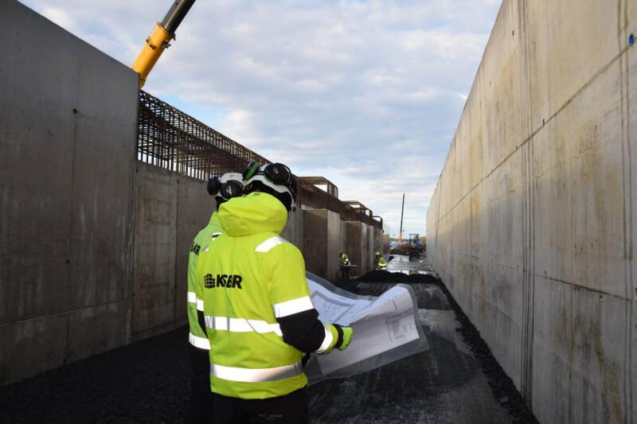

Talvirakentamisessa pidetään pää kylmänä ja betoni lämpimänä
Betonia kannattaa valaa kesällä, mutta hankkeen aikataulu ei odota kevättä. Näin KSBR valaa pakkasella niin, että rakenne saavuttaa lujuutensa ja kalusto kestää.

Lyhyesti
Betonia voi valaa pakkasella, kun massa on lähtiessään lämmin ja rakenne suojataan, kunnes se kestää jäätymisen. Pumppukalusto on rajoillaan noin −15 asteessa ja betoniasema noin −20 asteessa. Jäätymisen rakenne kestää, kun puristuslujuus on vähintään 5 MPa. Jälkihoito kestää talvella vähintään viikon ja usein pidempään.
Miksi betonia valetaan pakkasella
Lämmin kausi on betonille helpoin ja yleensä edullisin. Teollisuus- ja energiahankkeiden aikataulut sidotaan kuitenkin tuotannon käynnistykseen ja verkkoliityntään, eivät vuodenaikaan. Siksi KSBR suunnittelee työjärjestyksen niin, että pakkasvaluja jää mahdollisimman vähän.
- Suuret perustustyöt ajoitetaan keväälle.
- Runko asennetaan syksyllä, jotta runko ja kuori ovat valmiit ennen talvea.
- Kun rakennus on suojassa, sen sisätilat lämmitetään ja valut jatkuvat sisällä.
Lämmin massa ja tarkka seuranta
Betoni alkaa sitoutua normaalisti noin neljän tunnin kuluttua. Mitä kylmempää massa on, sitä hitaammin sitoutuminen alkaa. Tavoitteena on massa, jonka lämpötila ei laske selvästi alle 20 asteen ensimmäisten tuntien aikana.
Ennen valua betonitoimittajalta tilataan lämpösimulaatio talviolosuhteisiin. Sen perusteella sovitaan, millaista massan pitää olla pumppauksen alkaessa. Valun aikana lämpöä seurataan, ja höyrykattilan tehoa lisätään tarvittaessa.

Kaustinen: massiivinen rakenne lämmittää itse itseään
Sibanye-Stillwaterin litiumhankkeessa Kaustisella KSBR rakensi Keliberin rikastamon ja vesilaitoksen rakenteet sekä murskainten perustukset. Kiireisin vaihe osui marraskuusta helmikuun alkuun. Työmaalla oli oma höyrytyskalusto.
Maanpaineseinien massa lähti 22–25 asteisena, eikä se jäähtynyt alle 18 asteen ennen kuin lujuus ja lämmönkehitys olivat käynnissä.
Betonin lämpötila maanpaineseinän sisällä, kun ulkona oli noin −15 astetta.Massiivinen rakenne tuottaa kovettuessaan niin paljon lämpöä, että suojausta tarvitaan vähemmän kuin ohuissa rakenteissa.
Ohuet rakenteet ovat toisin: ne jäähtyvät nopeasti ja tarvitsevat suojauksen ja lämmityksen. Jätevedenpuhdistamon altaan seiniä KSBR lämmitti lämmönvaihdinjärjestelmällä, joka kierrätti lämpöä jänneputkien kautta.
Milloin rakenne kestää jäätymisen
Kaksi lukua ratkaisee. Kun puristuslujuus on 5 MPa, rakenne kestää jäätymisen, mutta sulanut rakenne ei vielä pysy koossa omalla lujuudellaan. Kun lujuudesta on saavutettu noin 60 prosenttia ennen jäätymistä, rakenne jatkaa lujittumista sulamisen jälkeen.
Jälkihoito kestää talvella pidempään
Jälkihoitoa jatketaan, kunnes betoni on saavuttanut 60–80 prosenttia suunnittelulujuudesta, ja aina vähintään viikon. Pakkasella valettu 30 senttimetrin pohjalaatta voi tarvita suojausta parisen viikkoa, joskus kevääseen asti.
Talvella on myös hyvät puolensa: betoniasemilla on väljempää, ja palvelu on usein parempaa kuin kesän ruuhkassa.
 Pysäköinti ja toimitilat
Pysäköinti ja toimitilat